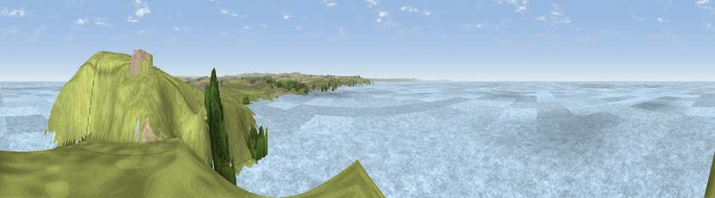

Viewpoint near Constantine Bay
#12123 in England · top 32% of its area beats it · near Constantine BayThe view, rendered

A 360° render of this exact spot computed from the terrain model, tree cover and land cover — summer colours, afternoon light, calibrated against photographs of famous viewpoints. Real trees, hedges and buildings will differ in detail.
The panorama
Grey silhouette: terrain skyline in each direction (720 bearings, Earth curvature and refraction included). Dashed green: skyline with trees (+15 m) and buildings (+8 m) as obstacles. Blue strip: how far the ground is visible on each bearing.
Where the view opens
Wedge length = distance to the farthest visible ground on that bearing (vegetation-aware). Rings at 10, 25 and 50 km.
What fills the view
85% water · 13% grassland · 1% woodland
Angular shares of the visible panorama (visual magnitude), not map area. Landscape diversity 0.22 (0–1 Shannon).
Key numbers
More beautiful places nearby
The staircase of upgrades: each row has a higher view potential than everything closer. Driving times are estimates from straight-line distance, calibrated against real road routing — check an actual route before setting out.
| Place | Direction | Drive | Score |
|---|---|---|---|
| Trevose Head | ENE · 1 km | ~2 min | 72.3 |
| Viewpoint near St Eval | SSE · 9 km | ~19 min | 73.2 |
| Viewpoint near New Polzeath | ENE · 10 km | ~19 min | 75.8 |
| Viewpoint near St Eval | SSE · 10 km | ~20 min | 78.3 |
| Viewpoint near Port Isaac | ENE · 18 km | ~32 min | 79.7 |
| Penhale Hill | SSE · 20 km | ~34 min | 80.3 |
| Viewpoint near Penhale | SSE · 22 km | ~36 min | 81.7 |
| Viewpoint near Nanpean | SE · 24 km | ~39 min | 84.2 |
50.54565, -5.03848 · source: screening · position refined by local search. Computed location — check access rights before visiting.